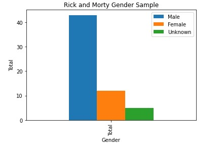

Rick and Morty, audicance demographics.

The TV Show I analyzed earlier this year was Rick and Morty, and I did an analysis on their character demographics. Which found that there were obviously more men then women portrayed in the show. My argument was that there isn't enough female representation in this TV show. Three different audiances I would present this data too would be, TV writers, Data analytics of TV shows, and streaming service CEO's. These audiance each have a different role in the TV industry. I would use Reveal JS for the TV writers, so that they could understand my agrument in a more of a flow format. For the data analysis people looking at viewship of these shows, I would use an HTML website with CSS and Vega, so that I could help them understand in a more notebook like format. And for the streaming service CEO's I would again use Reveal JS, but with some vega visualization tools to show different graphs of viewship to shows that have a more balanced character demographic.
For the TV Writers, I would use a Reveal JS deck to explain to them how their character demographics are not that diverse. Yes there are aliens and female scientsits, but the show still has misoginsitic under tones. Using different unique visualization and a sectioned off flow foramt to mimic sotry boarding, I could help them understand that there needs to be better representation in the show.
With data analysis that focus on viewership, I would use an HTML/CSS format wtih vega visulizations to show how different shows with a more balanced demographic differs from their viewrship. The demographics would be both the viewer and the characters in the shows. I would use this format that is similar to a phython notebook so that understanding the data and arguments would look familar.
For the last audiance of streaming service CEO's, I would use a presentation format like Reveal JS with some vega visualizations to show how the character demographics and viewr demographics differ between Rick and Morty, to other shows of theirs. By using a presentation like format with charts and graphs, the CEO's would understand how their viewer/ income from these different platforms could be either increased or decreased.